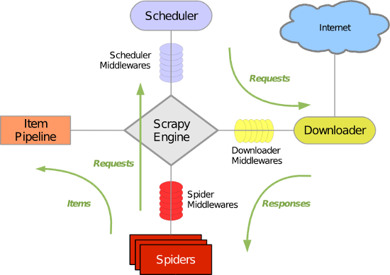

scrapy学习笔记
scrapy是python最有名的爬虫框架之一，可以很方便的进行web抓取，并且提供了很强的定制型，这里记录简单学习的过程和在实际应用中会遇到的一些常见问题
一、安装
在安装scrapy之前有一些依赖需要安装，否则可能会安装失败，scrapy的选择器依赖于lxml，还有Twisted网络引擎，下面是ubuntu下安装的过程
1. linux下安装
|
1 2 3 4 5 6 7 8 9 10 11 12 13 14 15 16 |
# 1. 安装xml依赖库 $ sudo apt-get install libxml2 libxml2-dev $ sudo apt-get install libxslt1-dev $ sudo apt-get install python-libxml2 # 2. 安装lxml $ sudo pip install lxml # 3. 安装Twisted（版本可以换成最新的），用pip也可以，如果失败的话下载源码安装，如下 $ wget https://pypi.python.org/packages/6b/23/8dbe86fc83215015e221fbd861a545c6ec5c9e9cd7514af114d1f64084ab/Twisted-16.4.1.tar.bz2#md5=c6d09bdd681f538369659111f079c29d $ tar xjf Twisted-16.4.1.tar.bz2 $ cd Twisted-16.4.1 $ sudo python setup.py install # 3. 安装scrapy $ sudo pip install scrapy |
2. Mac下安装
|
1 2 3 4 5 |
# 安装xml依赖库 $ xcode-select —install # 其实相关依赖pip会自动帮我们装上 $ pip install scrapy |
mac下安装有时候会失败，建议使用virtualenv安装在独立的环境下，可以减少一些问题，因为mac系统自带python，例如一些依赖库依赖的一些新的版本，而升级新版本会把旧版本卸载掉，卸载可能会有权限的问题
二、基本使用
1. 初始化scrapy项目
我们可以使用命令行初始化一个项目
|
1 |
$ scrapy startproject tutorial |
这里可以查看scrapy更多其他的命令
初始化完成后，我们得到下面目录结构
|
1 2 3 4 5 6 |
scrapy.cfg: 项目的配置文件 tutorial/: 该项目的python模块, 在这里添加代码 items.py: 项目中的item文件 pipelines.py: 项目中的pipelines文件. settings.py: 项目全局设置文件. spiders/ 爬虫模块目录 |
我们先看一下scrapy的处理流程

scrapy由下面几个部分组成
spiders：爬虫模块，负责配置需要爬取的数据和爬取规则，以及解析结构化数据items：定义我们需要的结构化数据，使用相当于dictpipelines：管道模块，处理spider模块分析好的结构化数据，如保存入库等middlewares：中间件，相当于钩子，可以对爬取前后做预处理，如修改请求header，url过滤等
我们先来看一个例子，在spiders目录下新建一个模块DmozSpider.py
|
1 2 3 4 5 6 7 8 9 10 11 12 13 14 15 16 17 |
import scrapy class DmozSpider(scrapy.Spider): # 必须定义 name = "dmoz" # 初始urls start_urls = [ "http://www.dmoz.org/Computers/Programming/Languages/Python/Books/", "http://www.dmoz.org/Computers/Programming/Languages/Python/Resources/" ] # 默认response处理函数 def parse(self, response): # 把结果写到文件中 filename = response.url.split("/")[-2] with open(filename, 'wb') as f: f.write(response.body) |
打开终端进入根目录，执行下面命令
|
1 |
$ scrapy crawl dmoz |
爬虫开始爬取start_urls定义的url，并输出到文件中，最后输出爬去报告，会输出爬取得统计结果
|
1 2 3 4 5 6 7 8 9 10 11 12 13 14 15 16 17 18 19 20 21 22 23 24 |
2016-09-13 10:36:43 [scrapy] INFO: Spider opened 2016-09-13 10:36:43 [scrapy] INFO: Crawled 0 pages (at 0 pages/min), scraped 0 items (at 0 items/min) 2016-09-13 10:36:43 [scrapy] DEBUG: Telnet console listening on 127.0.0.1:6023 2016-09-13 10:36:44 [scrapy] DEBUG: Crawled (200) <GET http://www.dmoz.org/Computers/Programming/Languages/Python/Resources/> (referer: None) 2016-09-13 10:36:45 [scrapy] DEBUG: Crawled (200) <GET http://www.dmoz.org/Computers/Programming/Languages/Python/Books/> (referer: None) 2016-09-13 10:36:45 [scrapy] INFO: Closing spider (finished) 2016-09-13 10:36:45 [scrapy] INFO: Dumping Scrapy stats: {'downloader/request_bytes': 548, 'downloader/request_count': 2, 'downloader/request_method_count/GET': 2, 'downloader/response_bytes': 16179, 'downloader/response_count': 2, 'downloader/response_status_count/200': 2, 'finish_reason': 'finished', 'finish_time': datetime.datetime(2016, 9, 13, 2, 36, 45, 585113), 'log_count/DEBUG': 3, 'log_count/INFO': 7, 'response_received_count': 2, 'scheduler/dequeued': 2, 'scheduler/dequeued/memory': 2, 'scheduler/enqueued': 2, 'scheduler/enqueued/memory': 2, 'start_time': datetime.datetime(2016, 9, 13, 2, 36, 43, 935790)} 2016-09-13 10:36:45 [scrapy] INFO: Spider closed (finished) |
这里我们完成了简单的爬取和保存的操作，会在根目录生成两个文件Resources和Books
2. 通过代码运行爬虫
每次进入控制台运行爬虫还是比较麻烦的，而且不好调试，我们可以通过CrawlerProcess通过代码运行爬虫，新建一个模块run.py
|
1 2 3 4 5 6 7 8 9 10 11 12 13 14 15 16 |
from scrapy.crawler import CrawlerProcess from scrapy.utils.project import get_project_settings from spiders.DmozSpider import DmozSpider # 获取settings.py模块的设置 settings = get_project_settings() process = CrawlerProcess(settings=settings) # 可以添加多个spider # process.crawl(Spider1) # process.crawl(Spider2) process.crawl(DmozSpider) # 启动爬虫，会阻塞，直到爬取完成 process.start() |
参考：http://doc.scrapy.org/en/latest/topics/practices.html#run-scrapy-from-a-script
三、Scrapy类
如上面的DmozSpider类，爬虫类继承自scrapy.Spider，用于构造Request对象给Scheduler
1. 常用属性与方法
属性
name：爬虫的名字，必须唯一（如果在控制台使用的话，必须配置）start_urls：爬虫初始爬取的链接列表parse：response结果处理函数custom_settings：自定义配置，覆盖settings.py中的默认配置
方法
start_requests：启动爬虫的时候调用，默认是调用make_requests_from_url方法爬取start_urls的链接，可以在这个方法里面定制，如果重写了该方法，start_urls默认将不会被使用，可以在这个方法里面定制一些自定义的url，如登录，从数据库读取url等，本方法返回Request对象make_requests_from_url：默认由start_requests调用，可以配置Request对象，返回Request对象parse：response到达spider的时候默认调用，如果在Request对象配置了callback函数，则不会调用，parse方法可以迭代返回Item或Request对象，如果返回Request对象，则会进行增量爬取
2. Request与Response对象
每个请求都是一个Request对象，Request对象定义了请求的相关信息（url, method, headers, body, cookie, priority）和回调的相关信息（meta, callback, dont_filter, errback），通常由spider迭代返回
其中meta相当于附加变量，可以在请求完成后通过response.meta访问
请求完成后，会通过Response对象发送给spider处理，常用属性有（url, status, headers, body, request, meta, ）
详细介绍参考官网
- https://doc.scrapy.org/en/latest/topics/request-response.html#request-objects
- https://doc.scrapy.org/en/latest/topics/request-response.html#response-objects
看下面这个例子
|
1 2 3 4 5 6 7 8 9 10 11 12 13 14 15 16 17 18 19 20 21 22 23 |
from scrapy import Spider from scrapy import Request class TestSpider(Spider): name = 'test' start_urls = [ "http://www.qq.com/", ] def login_parse(self, response): ''' 如果登录成功,手动构造请求Request迭代返回 ''' print response for i in range(0, 10): yield Request('http://www.example.com/list/1?page={0}'.format(i)) def start_requests(self): ''' 覆盖默认的方法(忽略start_urls),返回登录请求页,制定处理函数为login_parse ''' return Request('http://www.example.com/login', method="POST" body='username=bomo&pwd=123456', callback=self.login_parse) def parse(self, response): ''' 默认请求处理函数 ''' print response |
四、Selector
上面我们只是爬取了网页的html文本，对于爬虫，我们需要明确我们需要爬取的结构化数据，需要对原文本进行解析，解析的方法通常有下面这些
- 普通文本操作
- 正则表达式：
re - Dom树操作：
BeautifulSoup - XPath选择器：
lxml
scrapy默认支持选择器的功能，自带的选择器构建与lxml之上，并对其进行了改进，使用起来更为简洁明了
1. XPath选择器
XPpath是标准的XML文档查询语言，可以用于查询XML文档中的节点和内容，关于XPath语法，可以参见这里
先看一个例子，通过html或xml构造Selector对象，然后通过xpath查询节点，并解析出节点的内容
|
1 2 3 4 5 6 7 |
from scrapy import Selector html = '<html><body><span>good</span><span>buy</span></body></html>' sel = Selector(text=html) nodes = sel.xpath('//span') for node in nodes: print node.extract() |
Selector相当于节点，通过xpath去到子节点集合（SelectorList），可以继续搜索，通过extract方法可以取出节点的值，extract方法也可以作用于SelectorList，对于SelectorList可以通过extract_first取出第一个节点的值
- 通过
text()取出节点的内容 - 通过
@href去除节点属性值（这里是取出href属性的值） - 直接对节点取值，则是输出节点的字符串
2. CSS选择器
除了XPath选择器，scrapy还支持css选择器
|
1 2 3 4 5 6 7 8 9 10 11 12 13 14 15 16 17 18 19 20 21 22 23 24 |
html = """ <html> <body> <span>good</span> <span>buy</span> <ul> <li class="video_part_lists">aa<li> <li class="video_part_lists">bb<li> <li class="audio_part_lists">cc<li> <li class="video_part_lists"> <a href="/">主页</a> <li> </ul> </body> </html> """ sel = Selector(text=html) # 选择class为video_part_lists的li节点 lis = sel.css('li.video_part_lists') for li in lis: # 选择a节点的属性 print li.css('a::attr(href)').extract() |
关于css选择器更多的规则，可以见w3c官网
五、Item类
上面我们只是爬取了网页的html文本，对于爬虫，我们需要明确我们需要爬取的结构化数据，我们定义一个item存储分类信息，scrapy的item继承自scrapy.Item
|
1 2 3 4 5 6 |
from scrapy import Item, Field class DmozItem(Item): title = Field() link = Field() desc = Field() |
scrapy.Item的用法与python中的字典用法基本一样，只是做了一些安全限制，属性定义使用Field，这里只是进行了声明，而不是真正的属性，使用的时候通过键值对操作，不支持属性访问
what, 好坑爹，这意味着所有的属性赋值都得用字符串了，这里有解释（还是没太明白）
修改DmozSpider的parse方法
|
1 2 3 4 5 6 7 8 9 |
class DmozSpider(scrapy.Spider): ... def parse(self, response): for sel in response.xpath('//ul/li'): dmoz_item = DmozItem() dmoz_item['title'] = sel.xpath('a/text()').extract() dmoz_item['link'] = sel.xpath('a/@href').extract() dmoz_item['desc'] = sel.xpath('text()').extract() print dmoz_item |
六、Pipeline
spider负责爬虫的配置，item负责声明结构化数据，而对于数据的处理，在scrapy中使用管道的方式进行处理，只要注册过的管道都可以处理item数据（处理，过滤，保存）
下面看看管道的声明方式，这里定义一个预处理管道PretreatmentPipeline.py，如果item的title为None，则设置为空字符串
|
1 2 3 4 5 6 |
class PretreatmentPipeline(object): def process_item(self, item, spider): if item['title']: # 不让title为空 item['title'] = '' return item |
再定义一个过滤重复数据的管道DuplicatesPipeline.py，当link重复，则丢弃
|
1 2 3 4 5 6 7 8 9 10 11 12 13 |
from scrapy.exceptions import DropItem class DuplicatesPipeline(object): def __init__(self): self.links = set() def process_item(self, item, spider): if item['link'] in self.links: # 跑出DropItem表示丢掉数据 raise DropItem("Duplicate item found: %s" % item) else: self.links.add(item['link']) return item |
最后可以定义一个保存数据的管道，可以把数据保存到数据库中
|
1 2 3 4 5 6 7 8 9 10 11 12 |
from scrapy.exceptions import DropItem from Database import Database class DatabasePipeline(object): def __init__(self): self.db = Database def process_item(self, item, spider): if self.db.item_exists(item['id']): self.db.update_item(item) else: self.db.insert_item(item) |
定义好管道之后我们需要配置到爬虫上，我们在settings.py模块中配置，后面的数字表示管道的顺序
|
1 2 3 4 |
ITEM_PIPELINES = { 'pipelines.DuplicatesPipeline.DuplicatesPipeline': 1, 'pipelines.PretreatmentPipeline.PretreatmentPipeline': 2, } |
我们也可以为spider配置单独的pipeline
|
1 2 3 4 5 6 7 8 9 |
class TestSpider(Spider): # 自定义配置 custom_settings = { # item处理管道 'ITEM_PIPELINES': { 'tutorial.pipelines.FangDetailPipeline.FangDetailPipeline': 1, }, } ... |
除了process_item方法外，pipeline还有open_spider和spider_closed两个方法，在爬虫启动和关闭的时候调用
七、Rule
爬虫的通常需要在一个网页里面爬去其他的链接，然后一层一层往下爬，scrapy提供了LinkExtractor类用于对网页链接的提取，使用LinkExtractor需要使用CrawlSpider爬虫类中，CrawlSpider与Spider相比主要是多了rules，可以添加一些规则，先看下面这个例子，爬取链家网的链接
|
1 2 3 4 5 6 7 8 9 10 11 12 13 14 15 16 17 18 19 20 21 22 23 |
from scrapy.spiders import CrawlSpider, Rule from scrapy.linkextractors import LinkExtractor class LianjiaSpider(CrawlSpider): name = "lianjia" allowed_domains = ["lianjia.com"] start_urls = [ "http://bj.lianjia.com/ershoufang/" ] rules = [ # 匹配正则表达式,处理下一页 Rule(LinkExtractor(allow=(r'http://bj.lianjia.com/ershoufang/pg\s+$',)), callback='parse_item'), # 匹配正则表达式,结果加到url列表中,设置请求预处理函数 # Rule(FangLinkExtractor(allow=('http://www.lianjia.com/client/', )), follow=True, process_request='add_cookie') ] def parse_item(self, response): # 这里与之前的parse方法一样，处理 pass |
1. Rule对象
Role对象有下面参数
link_extractor：链接提取规则callback：link_extractor提取的链接的请求结果的回调cb_kwargs：附加参数，可以在回调函数中获取到follow：表示提取的链接请求完成后是否还要应用当前规则（boolean），如果为False则不会对提取出来的网页进行进一步提取，默认为Falseprocess_links：处理所有的链接的回调，用于处理从response提取的links，通常用于过滤（参数为link列表）process_request：链接请求预处理（添加header或cookie等）
2. LinkExtractor
LinkExtractor常用的参数有：
allow：提取满足正则表达式的链接deny：排除正则表达式匹配的链接（优先级高于allow）allow_domains：允许的域名（可以是str或list）deny_domains：排除的域名（可以是str或list）restrict_xpaths：提取满足XPath选择条件的链接（可以是str或list）restrict_css：提取满足css选择条件的链接（可以是str或list）tags：提取指定标签下的链接，默认从a和area中提取（可以是str或list）attrs：提取满足拥有属性的链接，默认为href（类型为list）unique：链接是否去重（类型为boolean）process_value：值处理函数（优先级大于allow）
关于LinkExtractor的详细参数介绍见官网
注意：如果使用rules规则，请不要覆盖或重写
CrawlSpider的parse方法，否则规则会失效，可以使用parse_start_urls方法
八、Middleware
从最开始的流程图可以看到，爬去一个资源链接的流程，首先我们配置spider相关的爬取信息，在启动爬取实例后，scrapy_engine从Spider取出Request（经过SpiderMiddleware），然后丢给Scheduler（经过SchedulerMiddleware），Scheduler接着把请求丢给Downloader（经过DownloadMiddlware），Downloader把请求结果丢还给Spider，然后Spider把分析好的结构化数据丢给Pipeline，Pipeline进行分析保存或丢弃，这里面有4个角色
scrapy有下面三种middlewares
SpiderMiddleware：通常用于配置爬虫相关的属性，引用链接设置，Url长度限制，成功状态码设置，爬取深度设置，爬去优先级设置等DownloadMiddlware：通常用于处理下载之前的预处理，如请求Header（Cookie,User-Agent），登录验证处理，重定向处理，代理服务器处理，超时处理，重试处理等SchedulerMiddleware（已经废弃）：为了简化框架，调度器中间件已经被废弃，使用另外两个中间件已经够用了
1. SpiderMiddleware
爬虫中间件有下面几个方法
process_spider_input：当response通过spider的时候被调用，返回None（继续给其他中间件处理）或抛出异常（不会给其他中间件处理，当成异常处理）process_spider_output：当spider有item或Request输出的时候调动process_spider_exception：处理出现异常时调用process_start_requests：spider当开始请求Request的时候调用
下面是scrapy自带的一些中间件（在scrapy.spidermiddlewares命名空间下）
- UrlLengthMiddleware
- RefererMiddleware
- OffsiteMiddleware
- HttpErrorMiddleware
- DepthMiddleware
我们自己实现一个SpiderMiddleware
|
1 |
TODO |
参考链接：http://doc.scrapy.org/en/latest/topics/spider-middleware.html
2. DownloaderMiddleware
下载中间件有下面几个方法
process_request：请求通过下载器的时候调用process_response：请求完成后调用process_exception：请求发生异常时调用from_crawler：从crawler构造的时候调用from_settings：从settings构造的时候调用
更多详细的参数解释见这里
在爬取网页的时候，使用不同的User-Agent可以提高请求的随机性，定义一个随机设置User-Agent的中间件RandomUserAgentMiddleware
|
1 2 3 4 5 6 7 8 9 10 11 12 13 14 15 16 17 18 19 20 21 |
import random class RandomUserAgentMiddleware(object): """Randomly rotate user agents based on a list of predefined ones""" def __init__(self, agents): self.agents = agents # 从crawler构造，USER_AGENTS定义在crawler的配置的设置中 @classmethod def from_crawler(cls, crawler): return cls(crawler.settings.getlist('USER_AGENTS')) # 从settings构造，USER_AGENTS定义在settings.py中 @classmethod def from_settings(cls, settings): return cls(settings.getlist('USER_AGENTS')) def process_request(self, request, spider): # 设置随机的User-Agent request.headers.setdefault('User-Agent', random.choice(self.agents)) |
在settings.py设置USER_AGENTS参数
|
1 2 3 4 5 6 7 8 9 10 11 12 13 14 15 16 17 18 |
USER_AGENTS = [ "Mozilla/4.0 (compatible; MSIE 6.0; Windows NT 5.1; SV1; AcooBrowser; .NET CLR 1.1.4322; .NET CLR 2.0.50727)", "Mozilla/4.0 (compatible; MSIE 7.0; Windows NT 6.0; Acoo Browser; SLCC1; .NET CLR 2.0.50727; Media Center PC 5.0; .NET CLR 3.0.04506)", "Mozilla/4.0 (compatible; MSIE 7.0; AOL 9.5; AOLBuild 4337.35; Windows NT 5.1; .NET CLR 1.1.4322; .NET CLR 2.0.50727)", "Mozilla/5.0 (Windows; U; MSIE 9.0; Windows NT 9.0; en-US)", "Mozilla/5.0 (compatible; MSIE 9.0; Windows NT 6.1; Win64; x64; Trident/5.0; .NET CLR 3.5.30729; .NET CLR 3.0.30729; .NET CLR 2.0.50727; Media Center PC 6.0)", "Mozilla/5.0 (compatible; MSIE 8.0; Windows NT 6.0; Trident/4.0; WOW64; Trident/4.0; SLCC2; .NET CLR 2.0.50727; .NET CLR 3.5.30729; .NET CLR 3.0.30729; .NET CLR 1.0.3705; .NET CLR 1.1.4322)", "Mozilla/4.0 (compatible; MSIE 7.0b; Windows NT 5.2; .NET CLR 1.1.4322; .NET CLR 2.0.50727; InfoPath.2; .NET CLR 3.0.04506.30)", "Mozilla/5.0 (Windows; U; Windows NT 5.1; zh-CN) AppleWebKit/523.15 (KHTML, like Gecko, Safari/419.3) Arora/0.3 (Change: 287 c9dfb30)", "Mozilla/5.0 (X11; U; Linux; en-US) AppleWebKit/527+ (KHTML, like Gecko, Safari/419.3) Arora/0.6", "Mozilla/5.0 (Windows; U; Windows NT 5.1; en-US; rv:1.8.1.2pre) Gecko/20070215 K-Ninja/2.1.1", "Mozilla/5.0 (Windows; U; Windows NT 5.1; zh-CN; rv:1.9) Gecko/20080705 Firefox/3.0 Kapiko/3.0", "Mozilla/5.0 (X11; Linux i686; U;) Gecko/20070322 Kazehakase/0.4.5", "Mozilla/5.0 (X11; U; Linux i686; en-US; rv:1.9.0.8) Gecko Fedora/1.9.0.8-1.fc10 Kazehakase/0.5.6", "Mozilla/5.0 (Windows NT 6.1; WOW64) AppleWebKit/535.11 (KHTML, like Gecko) Chrome/17.0.963.56 Safari/535.11", "Mozilla/5.0 (Macintosh; Intel Mac OS X 10_7_3) AppleWebKit/535.20 (KHTML, like Gecko) Chrome/19.0.1036.7 Safari/535.20", "Opera/9.80 (Macintosh; Intel Mac OS X 10.6.8; U; fr) Presto/2.9.168 Version/11.52", ] |
配置爬虫中间件的方式与pipeline类似，第二个参数表示优先级
|
1 2 3 4 5 6 7 8 9 10 11 12 |
# 配置爬虫中间件 SPIDER_MIDDLEWARES = { 'myproject.middlewares.CustomSpiderMiddleware': 543, # 如果想禁用默认的中间件的话，可以设置其优先级为None 'scrapy.spidermiddlewares.offsite.OffsiteMiddleware': None, } # 配置下载中间件 DOWNLOADER_MIDDLEWARES = { 'myproject.middlewares.RandomUserAgentMiddleware': 543, 'scrapy.contrib.downloadermiddleware.useragent.UserAgentMiddleware': None, } |
九、缓存
scrapy默认已经自带了缓存的功能，通常我们只需要配置即可，打开settings.py
|
1 2 3 4 5 6 7 8 9 10 11 12 13 14 |
# 打开缓存 HTTPCACHE_ENABLED = True # 设置缓存过期时间（单位：秒） #HTTPCACHE_EXPIRATION_SECS = 0 # 缓存路径(默认为：.scrapy/httpcache) HTTPCACHE_DIR = 'httpcache' # 忽略的状态码 HTTPCACHE_IGNORE_HTTP_CODES = [] # 缓存模式(文件缓存) HTTPCACHE_STORAGE = 'scrapy.extensions.httpcache.FilesystemCacheStorage' |
更多参数参见这里
十、多线程
scrapy网络请求是基于Twisted，而Twisted默认支持多线程，而且scrapy默认也是通过多线程请求的，并且支持多核CPU的并发，通常只需要配置一些参数即可
|
1 2 3 4 5 6 7 8 9 10 11 |
# 默认Item并发数：100 CONCURRENT_ITEMS = 100 # 默认Request并发数：16 CONCURRENT_REQUESTS = 16 # 默认每个域名的并发数：8 CONCURRENT_REQUESTS_PER_DOMAIN = 8 # 每个IP的最大并发数：0表示忽略 CONCURRENT_REQUESTS_PER_IP = 0 |
更多参数参见这里
十一、常见问题
1. 项目名称问题
在使用的时候遇到过一个问题，在初始化scrapy startproject tutorial的时候，如果使用了一些特殊的名字，如：test, fang等单词的话，通过get_project_settings方法获取配置的时候会出错，改成tutorial或一些复杂的名字的时候不会
|
1 |
ImportError: No module named tutorial.settings |
这是一个bug，在github上有提到：https://github.com/scrapy/scrapy/issues/428，但貌似没有完全修复，修改一下名字就好了（当然scrapy.cfg和settings.py里面也需要修改）
2. 为每个pipeline配置spider
上面我们是在settings.py里面配置pipeline，这里的配置的pipeline会作用于所有的spider，我们可以为每一个spider配置不同的pipeline，设置Spider的custom_settings对象
|
1 2 3 4 5 6 7 8 |
class LianjiaSpider(CrawlSpider): ... # 自定义配置 custom_settings = { 'ITEM_PIPELINES': { 'tutorial.pipelines.TestPipeline.TestPipeline': 1, } } |
3. 获取提取链接的节点信息
通过LinkExtractor提取的scrapy.Link默认不带节点信息，有时候我们需要节点的其他attribute属性，scrapy.Link有个text属性保存从节点提取的text值，我们可以通过修改lxmlhtml._collect_string_content变量为etree.tostring，这样可以在提取节点值就变味渲染节点scrapy.Link.text，然后根据scrapy.Link.text属性拿到节点的html，最后提取出我们需要的值
|
1 2 3 |
from lxml import etree import scrapy.linkextractors.lxmlhtml scrapy.linkextractors.lxmlhtml._collect_string_content = etree.tostring |
4. 从数据库中读取urls
有时候我们已经把urls下载到数据库了，而不是在start_urls里配置，这时候可以重载spider的start_requests方法
|
1 2 3 |
def start_requests(self): for u in self.db.session.query(User.link): yield Request(u.link) |
我们还可以在Request添加元数据，然后在response中访问
|
1 2 3 4 5 6 |
def start_requests(self): for u in self.db.session.query(User): yield Request(u.link, meta={'name': u.name}) def parse(self, response): print response.url, response.meta['name'] |
5. 如何进行循环爬取
有时候我们需要爬取的一些经常更新的页面，例如：间隔时间为2s，爬去一个列表前10页的数据，从第一页开始爬，爬完成后重新回到第一页
目前的思路是，通过parse方法迭代返回Request进行增量爬取，由于scrapy默认由缓存机制，需要修改
6. 关于去重
scrapy默认有自己的去重机制，默认使用scrapy.dupefilters.RFPDupeFilter类进行去重，主要逻辑如下
|
1 2 3 4 5 6 7 8 9 10 11 12 13 14 15 16 17 |
if include_headers: include_headers = tuple(to_bytes(h.lower()) for h in sorted(include_headers)) cache = _fingerprint_cache.setdefault(request, {}) if include_headers not in cache: fp = hashlib.sha1() fp.update(to_bytes(request.method)) fp.update(to_bytes(canonicalize_url(request.url))) fp.update(request.body or b'') if include_headers: for hdr in include_headers: if hdr in request.headers: fp.update(hdr) for v in request.headers.getlist(hdr): fp.update(v) cache[include_headers] = fp.hexdigest() return cache[include_headers] |
默认的去重指纹是sha1(method + url + body + header)，这种方式并不能过滤很多，例如有一些请求会加上时间戳的，基本每次都会不同，这时候我们需要自定义过滤规则
|
1 2 3 4 5 6 7 8 9 10 11 12 13 14 |
from scrapy.dupefilter import RFPDupeFilter class CustomURLFilter(RFPDupeFilter): """ 只根据url去重""" def __init__(self, path=None): self.urls_seen = set() RFPDupeFilter.__init__(self, path) def request_seen(self, request): if request.url in self.urls_seen: return True else: self.urls_seen.add(request.url) |
配置setting
|
1 |
DUPEFILTER_CLASS = 'tutorial.custom_filters.CustomURLFilter' |
7. 如何在Pipeline中处理不同的Item
scrapy所有的迭代出来的的Item都会经过所有的Pipeline，如果需要处理不同的Item，只能通过isinstance()方法进行类型判断，然后分别进行处理，暂时没有更好的方案
8. url按顺序执行
我们可以通过Request的priority控制url的请求的执行顺序，但由于网络请求的不确定性，不能保证返回也是按照顺序进行的，如果需要进行逐个url请求的话，吧url列表放在meta对象里面，在response的时候迭代返回下一个Request对象到调度器，达到顺序执行的目的，暂时没有更好的方案
十二、总结
scrapy虽然是最有名的python爬虫框架，但是还是有很多不足，例如，item不能单独配置给制定的pipeline，每一个爬取的所有item都会走遍所有的管道，需要在管道里面去判断不同类型的item，如果在pipelines和items比较多的项目，将会让项目变得非常臃肿
如有问题欢迎到我的博客留言